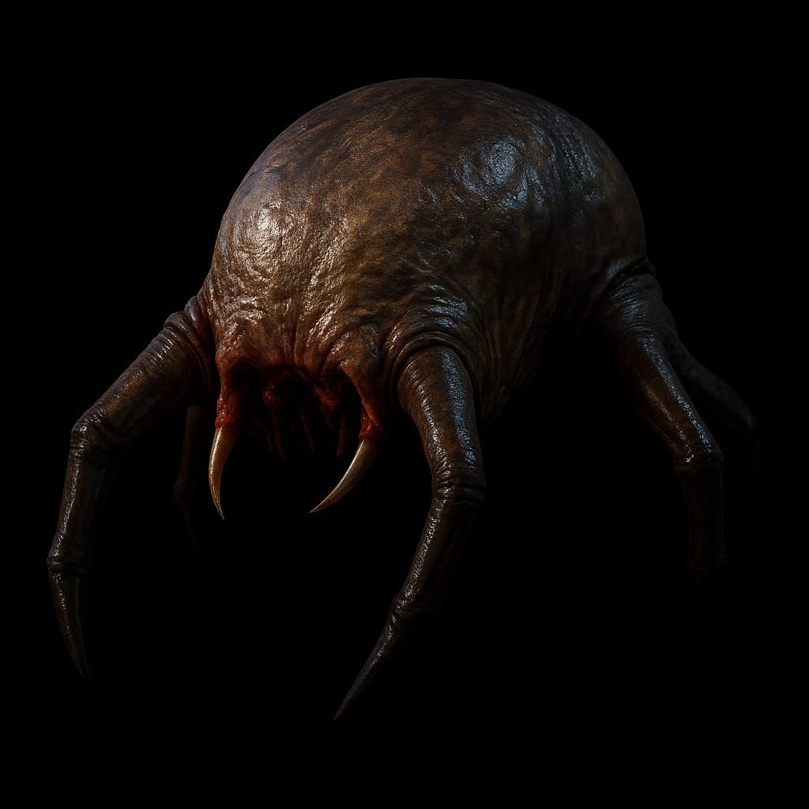

Headcrabs: ¿tienen un ritmo o es puro desorden?
En diversas ocasiones se ha observado que al aparecer, los Headcrabs emiten sonidos que parecen tener un patrón rítmico determinado. Algunos creen que se trata de un mensaje en código, mientras otros lo consideran simplemente parte del caos ambiental del juego.
Se han analizado grabaciones y se detectaron posibles compases que coinciden con beats sutiles. Esa idea, aunque aún sin confirmar, ha generado debate en comunidades que insisten en que hay más de lo aparente.
Aunque la evidencia es complicada de interpretar, la posibilidad de que exista un mensaje oculto en sus sonidos invita a mirar más de cerca cada aparición. Es un detalle que suma a la sensación de misterio que permea todo el entorno del juego.
